温泉について
地下千メートルより湧き出る名湯の恵みに包まれて、
日常を忘れるひとときを。
当館の温泉は、古くから「美肌の湯」として親しまれてきた良質な温泉です。 豊富なミネラルを含んだ源泉かけ流しの湯で、 心も身体も芯から温まり、日頃の疲れを癒やしていただけます。
泉質・効能
- 泉質：アルカリ性単純温泉
- 泉温：42℃
- 効能：神経痛、筋肉痛、関節痛、疲労回復、美肌効果
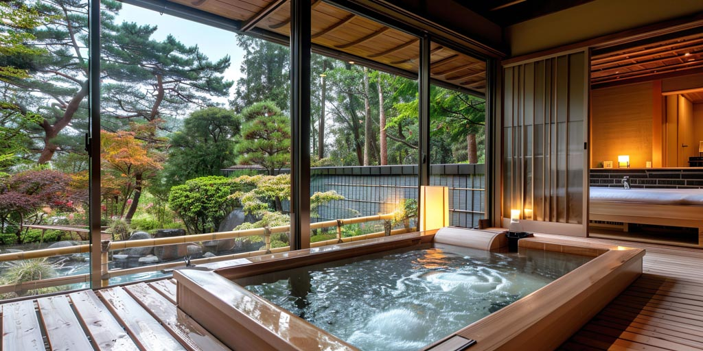
大浴場
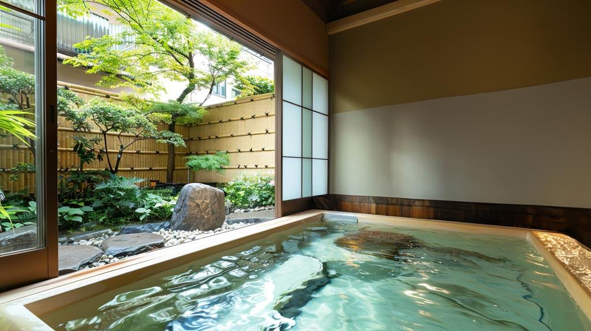
内湯「天空の湯」
大きな窓から四季の庭園を眺めながら入浴できる内湯。 朝は朝日が差し込み、夜は星空を仰ぎながら ゆったりとお湯に浸かっていただけます。
営業時間：15:00〜23:00 / 6:00〜10:00
温度：42℃
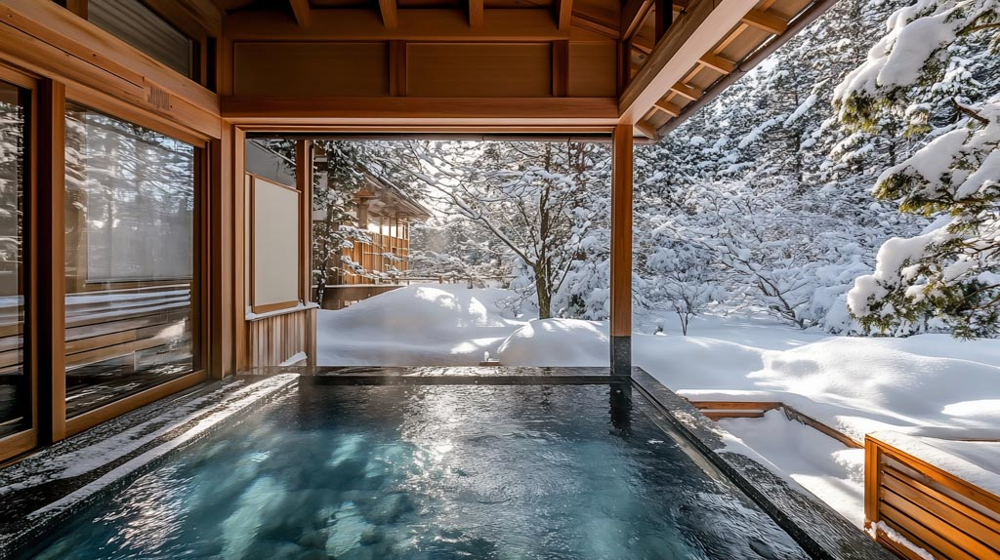
露天風呂「雪見の湯」
四季を肌で感じることができる露天風呂。 春は桜、夏は新緑、秋は紅葉、冬は雪景色と、 季節ごとに異なる表情をお楽しみいただけます。
営業時間：15:00〜23:00 / 6:00〜10:00
温度：40℃
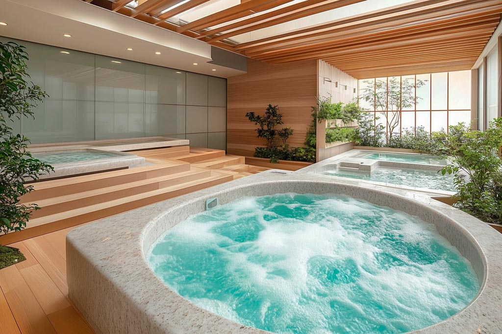
円形風呂「和輪の湯」
モダンな設計の円形風呂で、心地よい水流と リラックス効果で疲れを癒やします。
営業時間：15:00〜23:00 / 6:00〜10:00
温度：41℃

森の湯「緑陰の湯」
森に囲まれた屋根付きの露天風呂。 鳥のさえずりと風の音に包まれた自然の中で 心身共にリフレッシュしていただけます。
営業時間：15:00〜23:00 / 6:00〜10:00
温度：40℃
貸切風呂
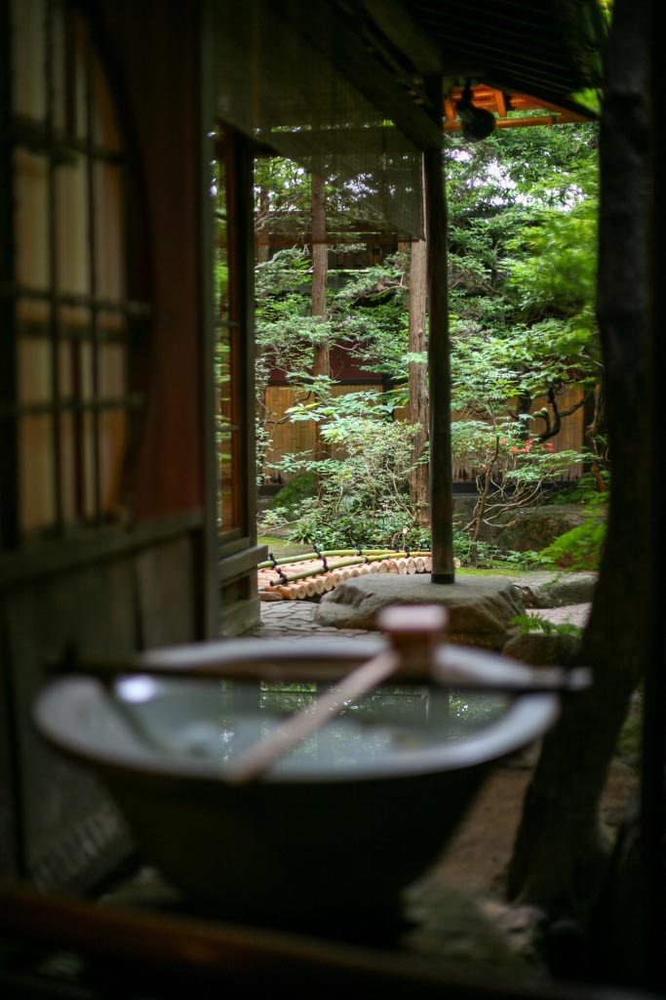
月影の湯
プライベートな空間で温泉をお楽しみいただける貸切風呂。 ご家族やカップルでゆっくりとお過ごしください。
利用時間：15:00〜22:00（1回45分）
料金：3,000円（税込）
定員：最大4名様
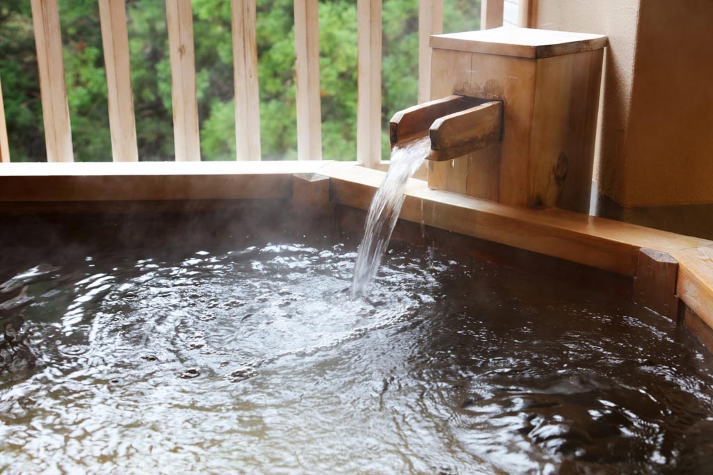
竹林の湯
竹林に囲まれた風情ある貸切風呂。 木の香りと竹のざわめきに包まれた癒やしの時間を。
利用時間：15:00〜22:00（1回45分）
料金：3,000円（税込）
定員：最大4名様
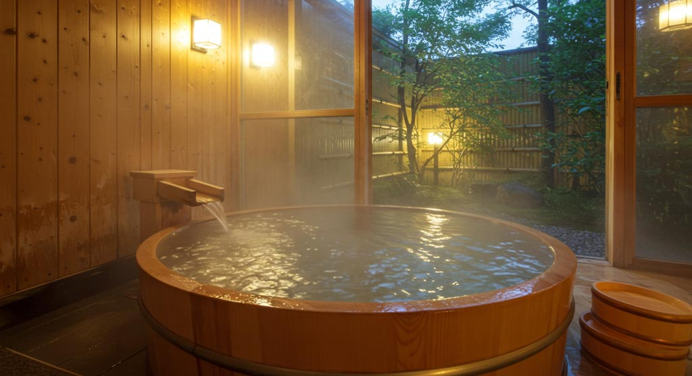
檜の湯
檜の香りに包まれた贅沢な木造貸切風呂。 木の温もりと香りで心も身体も癒やされます。
利用時間：15:00〜22:00（1回45分）
料金：4,000円（税込）
定員：最大3名様
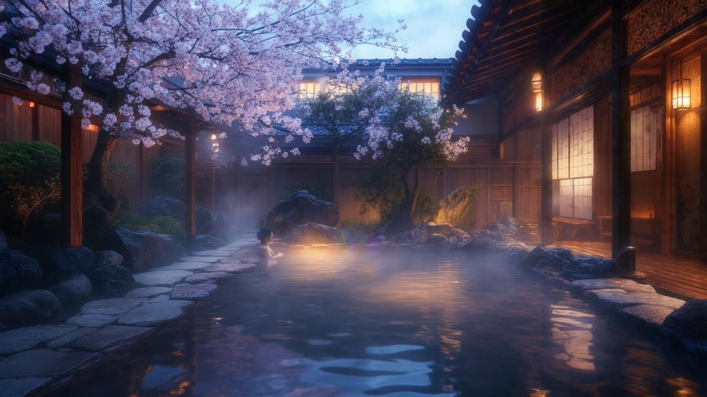
桜夜の湯
夜桜を愛でながら入浴できる特別な貸切風呂。 幻想的な夜景とともに至福のひとときを。
利用時間：18:00〜22:00（1回45分）
料金：5,000円（税込）
定員：最大2名様
その他の施設
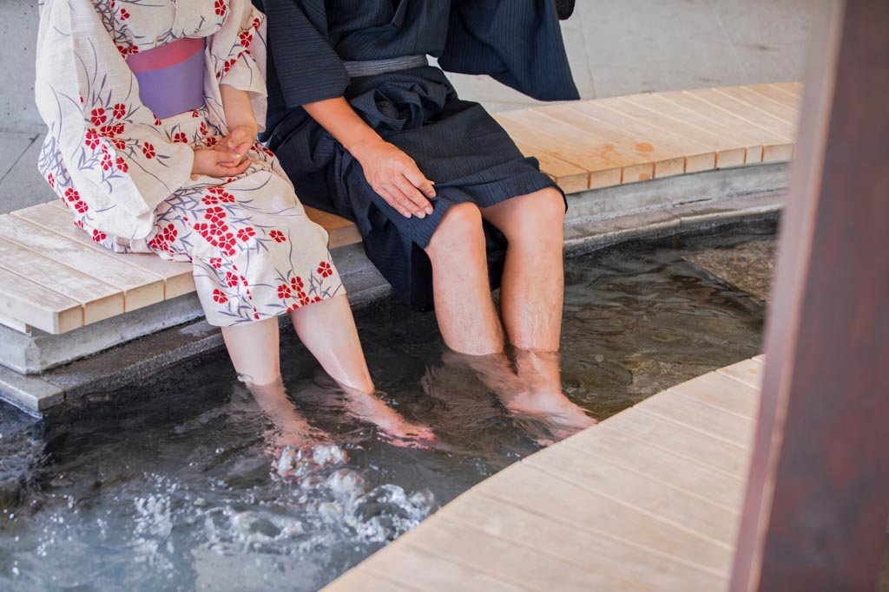
足湯
庭園を眺めながら気軽にお楽しみいただける足湯。 お散歩の途中や湯上りの休憩にご利用ください。
営業時間：6:00〜22:00
料金：無料
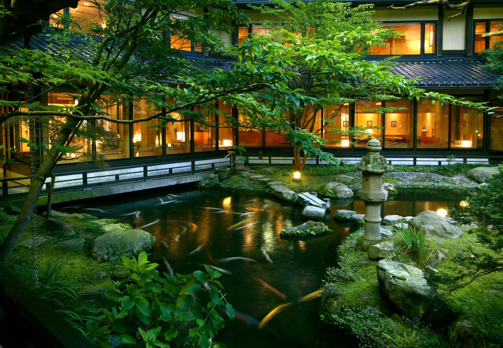
日本庭園
四季を通じて美しい表情を見せる当館自慢の庭園。 散策路も整備されており、ゆっくりとお散歩をお楽しみいただけます。
開放時間：24時間
ライトアップ：18:00〜22:00
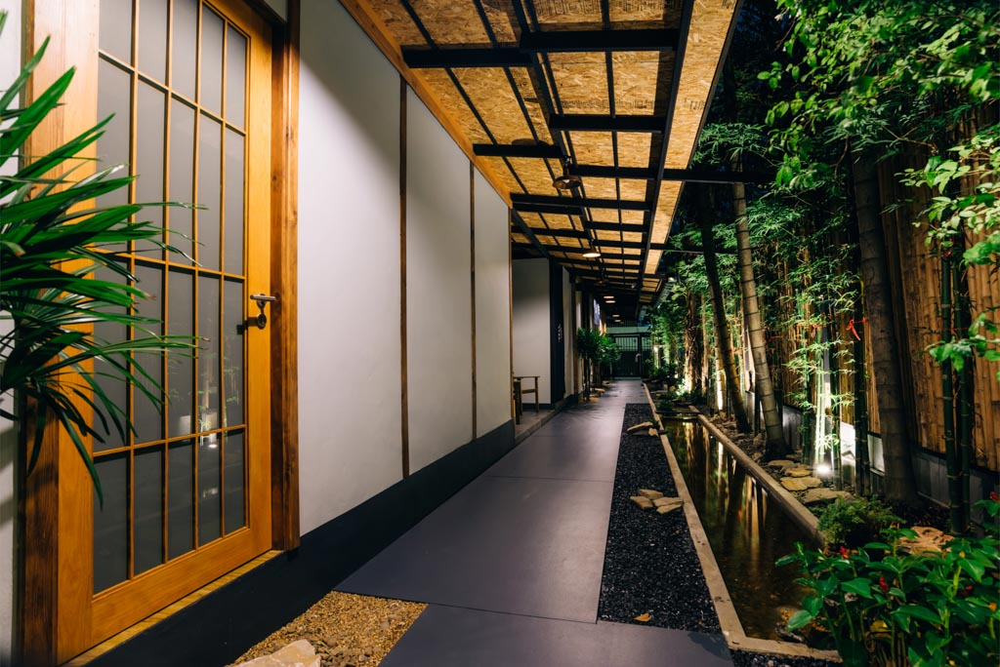
湯上り処
湯上りにゆっくりとお過ごしいただける休憩スペース。 冷たいお水やお茶をご用意しております。
営業時間：15:00〜23:00
サービス：お水、お茶（無料）
山路来て 何やらゆかし すみれ草
ご利用案内
入浴時のお願い
- 入浴前には必ずかけ湯をしてからお入りください
- タオルは湯船に入れないでください
- 他のお客様のご迷惑になる行為はお控えください
- 泥酔状態でのご利用はお断りいたします
お子様の入浴について
- 小学生以下のお子様は保護者同伴でお願いいたします
- おむつが取れていないお子様はご利用いただけません
- お子様の安全管理は保護者の方でお願いいたします
貸切風呂のご予約
- チェックイン時にフロントにてご予約ください
- 当日のご予約のみ承っております
- 料金は現金またはクレジットカードでお支払いください
温泉体験ギャラリー
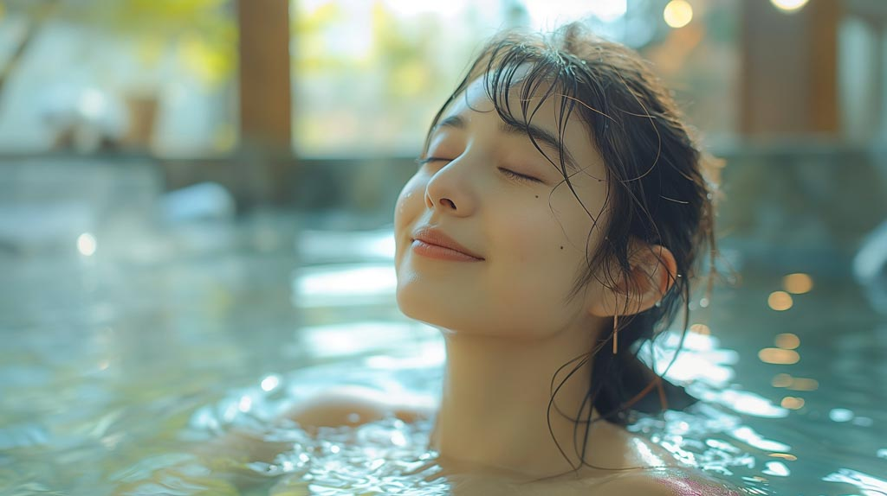
癒しのひととき
源泉かけ流しの湯に身を委ね、日頃の疲れを癒してください。心も身体もリフレッシュできます。
至福の時間
ご家族やご友人と一緒に、特別な時間をお過ごしください。温泉が紡ぐ絆の時間です。
雪見の湯
冬の醍醐味、雪景色を眺めながらの露天風呂。幻想的な雪見風呂をお楽しみいただけます。
泉質・効能のご案内
身も心も
清らかに
泉質
ナトリウム・カルシウム－硫酸塩・塩化物温泉（低張性・弱アルカリ性・高温泉）
効能
一般的適応症
- 筋肉若しくは関節の慢性的な痛み又はこわばり
- 運動麻痺における筋肉のこわばり
- 胃腸機能の低下
- 軽症高血圧
- 糖尿病
- 軽い高コレステロール血症
- 軽い喘息又は肺気腫
- 痔の痛み
- 自律神経不安定症
- ストレスによる諸症状
- 病後回復期
- 疲労回復
- 健康増進
泉質別適応症
- きりきず
- 末梢循環障害
- 冷え性
- うつ状態
- 皮膚乾燥症
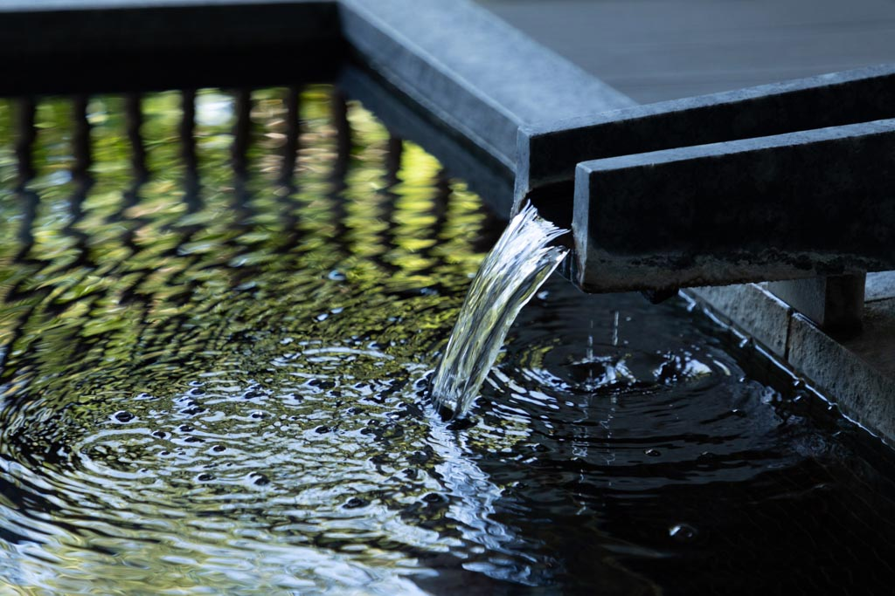
温泉スタッフサービス
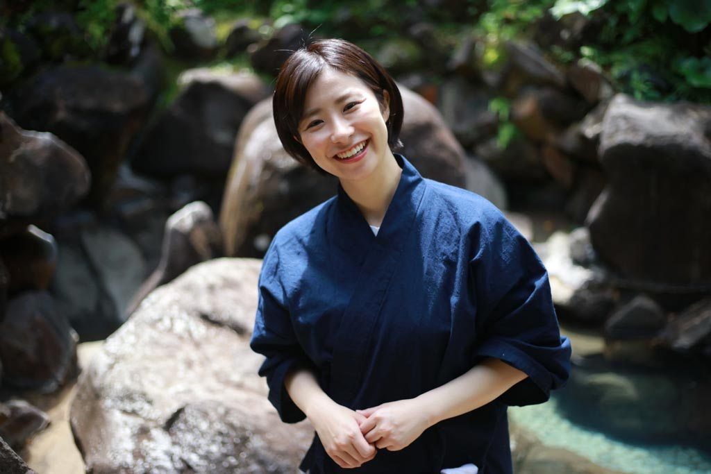
露天風呂案内
露天風呂でのおもてなしサービス。季節の説明や温泉の入り方をご案内いたします。
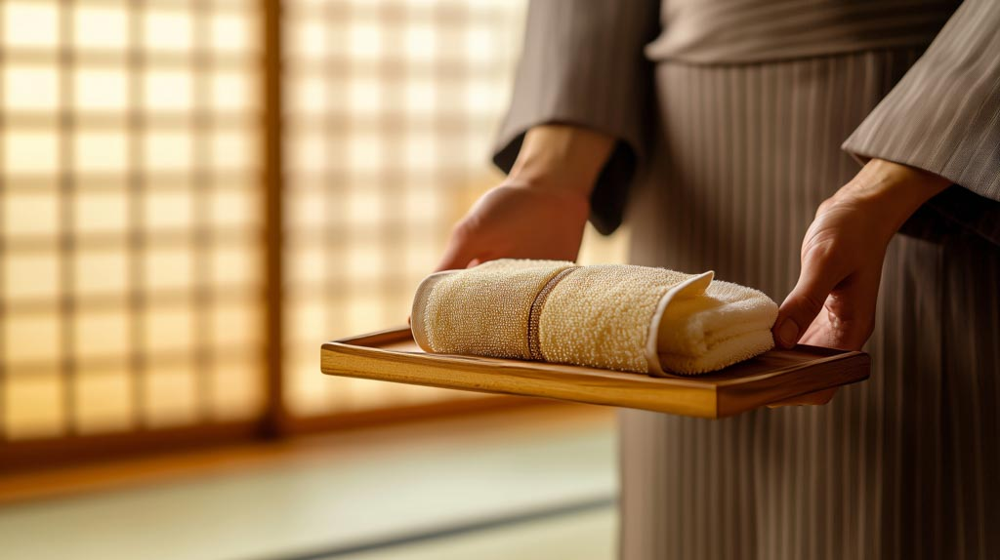
タオルサービス
清潔で温かいタオルをご用意。湯上りのひとときを更に心地よくお過ごしいただけます。
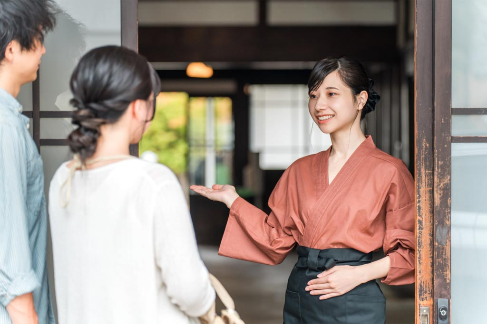
湯上りサポート
湯上り処でのお飲み物サービスやリラクゼーションのお手伝いをいたします。